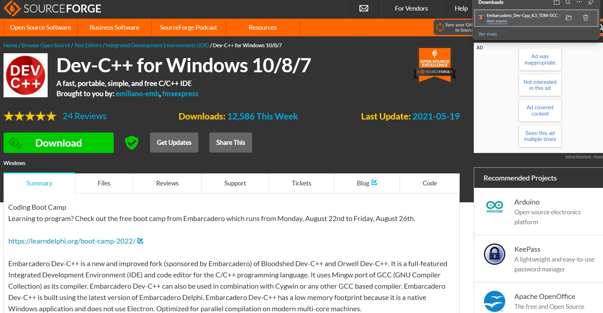
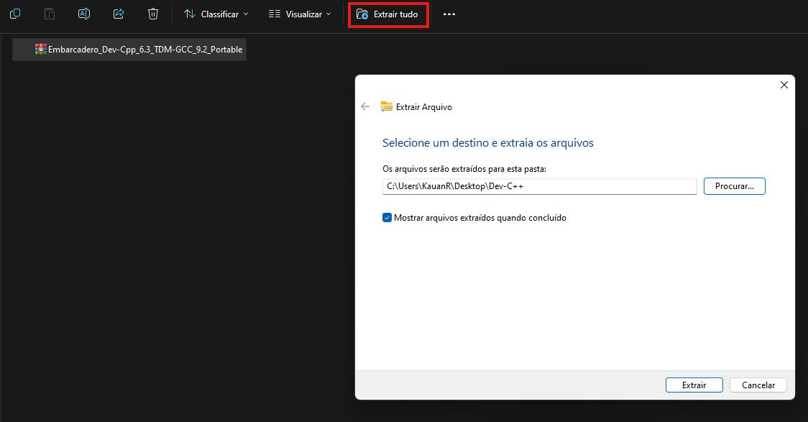
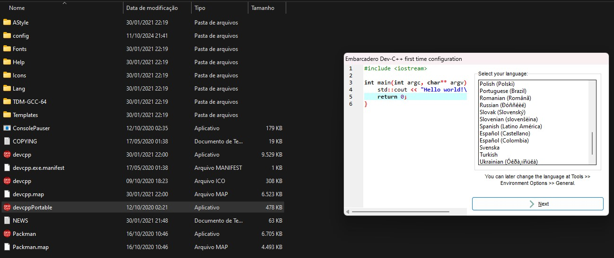
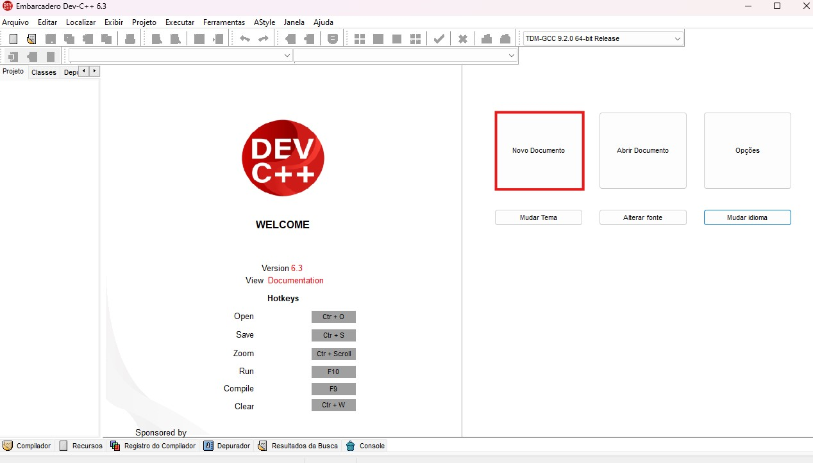

:format(webp))
Ken Thompson (criador da Linguagem C) e Dennis Ritchie.
-O livro Treinamento em Linguagem C, de Victorine Viviane Mizrahi, é uma ótima referência para iniciantes começarem a estudar. A seguir há um link para você dar uma olhada:
Introdução
-A linguagem C é uma das linguagens de programação mais fundamentais e influentes, amplamente utilizada em diversas áreas da computação. Foi inicialmente empregada para reformular o sistema operacional UNIX, que até então era codificado em Assembly. Criada no ano de 1972 por Dennis Ritchie, C é uma escolha popular para quem deseja entender os conceitos essenciais da programação e desenvolver software eficiente. Destacando-se por ser uma linguagem de baixo nível, estruturada, portável e confiável. Por estar mais próxima da linguagem de máquina, exige uma atenção especial do programador, já que cada ação precisa ser descrita detalhadamente.
Por que Aprender C?
1. Base Sólida.
-Fundamentos da Programação: C ensina conceitos como variáveis, tipos de dados, estruturas de controle (if, for, while), funções e arrays. Esses fundamentos são cruciais para qualquer linguagem de programação que você venha a aprender depois.
2. Desempenho e Eficiência.
-Controle sobre o Hardware: C permite que você escreva programas que interagem diretamente com o hardware, resultando em código altamente eficiente e rápido.
3. Portabilidade.
-Escreva uma vez, execute em qualquer lugar: Os programas em C podem ser facilmente transferidos entre diferentes sistemas operacionais, o que torna essa linguagem extremamente flexível e versátil.
4. Aplicações Diversificadas.
-Uso em Várias Áreas: C é amplamente utilizado em desenvolvimento de sistemas operacionais, software embarcado, jogos e aplicações que exigem alto desempenho.
5. Comunidade e Recursos
-Apoio e Aprendizado: A linguagem C possui uma comunidade grande e ativa, oferecendo uma variedade de recursos, como livros, tutoriais online e fóruns de discussão, que facilitam o aprendizado.
O que Você Vai Aprender?
-Ao longo do seu aprendizado em C, você explorará os seguintes tópicos:
1. Sintaxe da Linguagem.
-Compreensão das regras básicas que definem a estrutura do código em C.
2. Estruturas de Controle.
-Uso de condicionais e loops para controlar o fluxo do programa.
3. Funções.
-Criação de funções para modularizar o código e tornar a programação mais organizada.
4. Manipulação de Strings e Arquivos.
-Aprender a trabalhar com texto e arquivos, fundamentais em muitas aplicações.
5. Ponteiros.
-Entendimento de ponteiros e alocação dinâmica de memória, conceitos avançados que oferecem grande poder e flexibilidade.
6. Estruturas de Dados.
-Implementação de estruturas como listas e arrays, essenciais para a organização de dados
Como Começar?
Treinamento em Linguagem C módulo 1 - Victorine Viviane Mizrahi.pdf - Google DriveCuriosidades sobre a Linguagem C:
Influência duradoura:
- Mesmo 5 décadas após sua criação, C ainda é amplamente utilizado em sistemas embarcados, sistemas operacionais, drivers de dispositivos e em áreas de alta performance;
Sem gerenciamento automático de memória:
Diferente de muitas linguagens modernas, como Java ou Python, C não faz gerenciamento automático de memória. Os programadores precisam alocar e liberar memória manualmente, o que requer cuidado para evitar vazamentos de memória;
Simplicidade:
Embora poderosa, a linguagem C é relativamente simples em termos de sintaxe e conjunto de palavras-chave. Possui apenas cerca de 32 palavras-chave.
Passo 1: Para começar a aprender a desenvolver em C é a Escolha de um Ambiente de Desenvolvimento:
-Instale um compilador C, como o GCC, e um editor de texto ou um IDE (Ambiente de Desenvolvimento Integrado) para escrever seu código. Recomendamos o uso do Dev-C++. Link para download: Download Embarcadero_Dev-Cpp_6.3_TDM-GCC_9.2_Portable.7z (Dev-C++ for Windows 10/8/7) (sourceforge.net)
Passo 2: Explore Tutoriais e Cursos.
-Utilize recursos online, como plataformas de ensino, vídeos e tutoriais interativos que guiarão você nos conceitos de C. Vamos pegar um exemplo de um Tutorial de instalação do Dev-C++.
-Se preferir um tutorial por vídeo, assista a seguir:
-Exemplo-
1-Acesse o site de download do programa, e espere alguns segundos até que inicie o download:

Download Embarcadero_Dev-Cpp_6.32- Com o arquivo compactado baixado, descompacte-o através do Windows, WinRAR ou 7-Zip para uma pasta de localização desejada:

Download Embarcadero_Dev-Cpp_6.33-Há duas opções de aplicativos disponíveis na pasta, a versão normal e a versão portátil. A versão portátil não há necessidade de instalação, basta abrir o arquivo “devcappPortable.exe”. Para a versão com instalação abra o arquivo “devcpp.exe”. Os próximos passos são iguais para ambas:

Download Embarcadero_Dev-Cpp_6.34- Se preferir, selecione as opções de linguagem e tema e prossiga até chegar na tela a seguir. Para abir um novo documento clique em “Novo Documento” ou pressione as teclas CTRL e N ao mesmo tempo: Download Embarcadero_Dev-Cpp_6.3

Com o seu Ambiente de Desenvolvimento em C pronto para uso, agora basta apenas seguir as orientações passadas ao longo do curso com calma e muita atenção!
Passo 3: Pratique Regularmente.
-A prática é fundamental! Resolva exercícios, participe de desafios de programação e trabalhe em projetos pequenos.
Passo 4: Participe da Comunidade.
-Junte-se a fóruns e grupos de discussão para tirar dúvidas e compartilhar experiências com outros aprendizes e profissionais.
Conclusão
Aprender a linguagem C é uma jornada que pode abrir muitas portas na sua carreira de programação. Com uma base sólida em C, você estará preparado para enfrentar desafios em diversas áreas da tecnologia. Não perca tempo—comece sua aventura na programação hoje mesmo e descubra o potencial que a linguagem C pode oferecer!